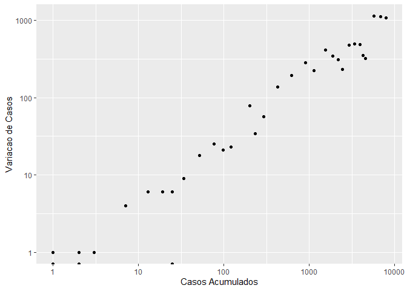
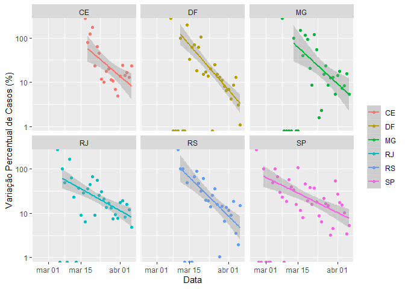

coronavirusbrazil
0.0.0.9000
The coronavirusbrazil package provides a tidy format dataset of the 2019 Novel Coronavirus COVID-19 (2019-nCoV) epidemic for Brazil. The raw data pulled from Ministerio da Saúde and brasil.io.
This repository was inspired by the RamiKrispin/coronavirus package repository.
Installation
You can install the released version of coronavirusbrazil from CRAN with:
# install.packages("devtools") devtools::install_github("mralbu/coronavirusbrazil")
Usage
The package contains the following datasets:
library(coronavirusbrazil) data("coronavirus_br") head(coronavirus_br) #> date cases deaths delta_cases delta_deaths days_gt_10 days_gt_100 #> 1 2020-02-25 0 0 NA NA NA NA #> 2 2020-02-26 1 0 1 0 NA NA #> 3 2020-02-27 1 0 0 0 NA NA #> 4 2020-02-28 1 0 0 0 NA NA #> 5 2020-02-29 2 0 1 0 NA NA #> 6 2020-03-01 2 0 0 0 NA NA
plot_coronavirus_br(coronavirus_br, xaxis_br = "cases", delta = TRUE, log_scale = TRUE)

data("coronavirus_br_states") head(coronavirus_br_states) #> # A tibble: 6 x 8 #> # Groups: state [1] #> state date cases deaths delta_cases delta_deaths days_gt_10 days_gt_100 #> <chr> <date> <dbl> <dbl> <dbl> <dbl> <dbl> <dbl> #> 1 RO 2020-02-25 0 0 0 0 NA NA #> 2 RO 2020-02-26 0 0 0 0 NA NA #> 3 RO 2020-02-27 0 0 0 0 NA NA #> 4 RO 2020-02-28 0 0 0 0 NA NA #> 5 RO 2020-02-29 0 0 0 0 NA NA #> 6 RO 2020-03-01 0 0 0 0 NA NA
plot_coronavirus_states(coronavirus_br_states, filter_state = c("RJ", "SP", delta = TRUE, log_scale = TRUE)) #> Scale for 'y' is already present. Adding another scale for 'y', which will #> replace the existing scale.

data("coronavirus_br_cities") head(coronavirus_br_cities) #> # A tibble: 6 x 11 #> date state city place_type cases deaths is_last estimated_popul~ #> <date> <chr> <chr> <chr> <dbl> <dbl> <lgl> <dbl> #> 1 2020-04-03 AC Acre~ city 9 0 TRUE 15256 #> 2 2020-04-03 AC Port~ city 1 0 TRUE 18504 #> 3 2020-04-03 AC Rio ~ city 36 0 TRUE 407319 #> 4 2020-04-03 AL Impo~ city 4 0 TRUE NA #> 5 2020-04-03 AL Mace~ city 17 2 TRUE 1018948 #> 6 2020-04-03 AL Mare~ city 1 0 TRUE 51901 #> # ... with 3 more variables: city_ibge_code <dbl>, #> # confirmed_per_100k_inhabitants <dbl>, death_rate <dbl>
There are also geospatial datasets avaiable:
dplyr::glimpse(spatial_br_states) #> Observations: 27 #> Variables: 13 #> $ id <chr> "AC", "AL", "AM", "AP", "BA", "CE", "DF", "ES", "GO", ... #> $ name <chr> "Acre", "Alagoas", "Amazonas", "Amapá", "Bahia", "Cear... #> $ uf <chr> "AC", "AL", "AM", "AP", "BA", "CE", "DF", "ES", "GO", ... #> $ codigo <int> 12, 27, 13, 16, 29, 23, 53, 32, 52, 21, 31, 50, 51, 15... #> $ regiao <chr> "Norte", "Nordeste", "Norte", "Norte", "Nordeste", "No... #> $ geometry <list> [<-70.470805, -9.213489>, <-36.622412, -9.514914>, <-... #> $ date <date> 2020-04-03, 2020-04-03, 2020-04-03, 2020-04-03, 2020-... #> $ cases <dbl> 46, 22, 260, 19, 282, 627, 402, 139, 88, 81, 397, 60, ... #> $ deaths <dbl> 0, 2, 7, 0, 5, 22, 5, 4, 2, 1, 6, 1, 1, 1, 1, 10, 4, 4... #> $ delta_cases <dbl> 3, 4, 31, 8, 15, 77, 32, 19, 15, 10, 27, 7, 8, 4, 8, 3... #> $ delta_deaths <dbl> 0, 1, 4, 0, 2, 2, 1, 3, 1, 0, 2, 0, 1, 0, 0, 1, 0, 0, ... #> $ log_cases <dbl> 1.662758, 1.342423, 2.414973, 1.278754, 2.450249, 2.79... #> $ log_deaths <dbl> -Inf, 0.3010300, 0.8450980, -Inf, 0.6989700, 1.3424227... #plot(spatial_br_states)
dplyr::glimpse(spatial_br_cities) #> Observations: 583 #> Variables: 7 #> $ date <date> 2020-04-03, 2020-04-03, 2020-04-03, 2020-04-03, 2020-04... #> $ city <chr> "Abaetetuba", "Açailândia", "Acrelândia", "Açu", "Adaman... #> $ cases <dbl> 1, 1, 9, 6, 1, 1, 1, 1, 1, 3, 1, 1, 1, 1, 3, 0, 3, 3, 2,... #> $ deaths <dbl> 0, 0, 0, 0, 0, 0, 0, 0, 0, 0, 0, 0, 0, 0, 0, 0, 0, 0, 0,... #> $ geometry <list> [<-48.87880, -1.72183>, <-47.50040, -4.94714>, <-66.897... #> $ log_cases <dbl> 0.0000000, 0.0000000, 0.9542425, 0.7781513, 0.0000000, 0... #> $ log_deaths <dbl> -Inf, -Inf, -Inf, -Inf, -Inf, -Inf, -Inf, -Inf, -Inf, -I... #plot(spatial_br_states)
Data Sources
- States: Ministerio da Saúde
- Cities: brasil.io
Links
- Browse source code at
https://github.com/mralbu/coronavirusbrazil/ - Report a bug at
https://github.com/mralbu/coronavirusbrazil/issues
License
- Full license
- MIT + file LICENSE
Developers
- Marcelo Albuquerque
Author, maintainer